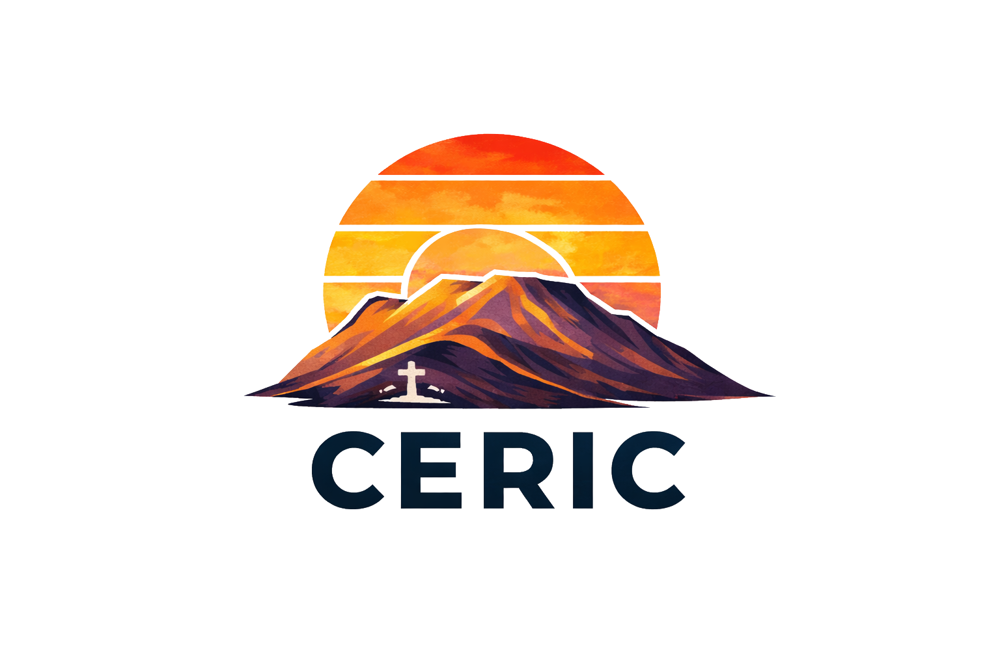
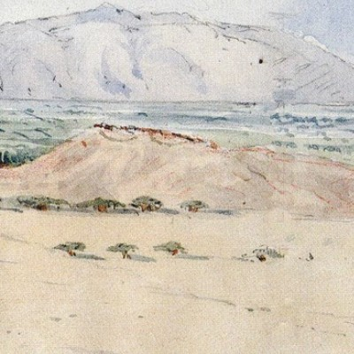

Detrás de lo que fue la antigua casa hacienda San Juan, en el actual distrito de Santiago de Surco, se alza una cadena de colinas que guarda una historia de guerra, muerte y memoria. Sin embargo, en la actualidad es un lugar olvidado y desconocido.